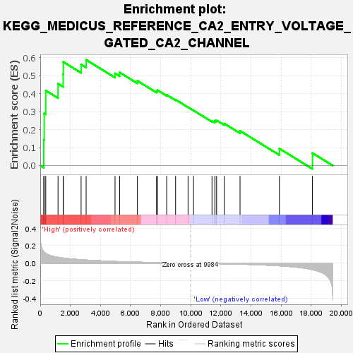
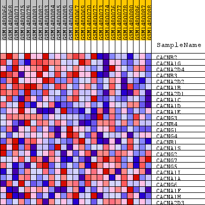
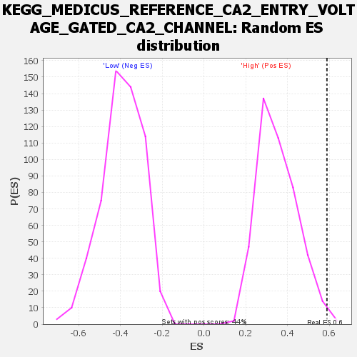

| Dataset | WG6v3.CPT1A.cls#High_versus_Low.CPT1A.cls#High_versus_Low_repos |
| Phenotype | CPT1A.cls#High_versus_Low_repos |
| Upregulated in class | High |
| GeneSet | KEGG_MEDICUS_REFERENCE_CA2_ENTRY_VOLTAGE_GATED_CA2_CHANNEL |
| Enrichment Score (ES) | 0.58790255 |
| Normalized Enrichment Score (NES) | 1.67284 |
| Nominal p-value | 0.009090909 |
| FDR q-value | 0.3155973 |
| FWER p-Value | 0.608 |

| SYMBOL | TITLE | RANK IN GENE LIST | RANK METRIC SCORE | RUNNING ES | CORE ENRICHMENT | |
|---|---|---|---|---|---|---|
| 1 | CACNB2 | CACNB2 | 231 | 0.130 | 0.1432 | Yes |
| 2 | CACNA1G | CACNA1G | 261 | 0.124 | 0.2900 | Yes |
| 3 | CACNA2D4 | CACNA2D4 | 365 | 0.111 | 0.4172 | Yes |
| 4 | CACNB3 | CACNB3 | 1182 | 0.067 | 0.4551 | Yes |
| 5 | CACNA2D2 | CACNA2D2 | 1522 | 0.059 | 0.5074 | Yes |
| 6 | CACNA1B | CACNA1B | 1534 | 0.058 | 0.5762 | Yes |
| 7 | CACNA2D1 | CACNA2D1 | 2714 | 0.039 | 0.5625 | Yes |
| 8 | CACNA1C | CACNA1C | 3048 | 0.036 | 0.5879 | Yes |
| 9 | CACNA1D | CACNA1D | 4967 | 0.020 | 0.5124 | No |
| 10 | CACNA1E | CACNA1E | 5271 | 0.018 | 0.5178 | No |
| 11 | CACNG3 | CACNG3 | 6453 | 0.012 | 0.4710 | No |
| 12 | CACNB4 | CACNB4 | 7723 | 0.007 | 0.4139 | No |
| 13 | CACNG1 | CACNG1 | 7785 | 0.007 | 0.4189 | No |
| 14 | CACNG4 | CACNG4 | 8396 | 0.005 | 0.3932 | No |
| 15 | CACNB1 | CACNB1 | 8989 | 0.003 | 0.3663 | No |
| 16 | CACNA1S | CACNA1S | 9815 | 0.000 | 0.3244 | No |
| 17 | CACNG2 | CACNG2 | 10178 | -0.001 | 0.3064 | No |
| 18 | CACNG7 | CACNG7 | 11405 | -0.004 | 0.2485 | No |
| 19 | CACNG5 | CACNG5 | 11597 | -0.005 | 0.2446 | No |
| 20 | CACNA1I | CACNA1I | 11605 | -0.005 | 0.2503 | No |
| 21 | CACNA1A | CACNA1A | 11711 | -0.005 | 0.2513 | No |
| 22 | CACNG6 | CACNG6 | 12223 | -0.007 | 0.2334 | No |
| 23 | CACNA1F | CACNA1F | 13267 | -0.011 | 0.1930 | No |
| 24 | CACNA1H | CACNA1H | 15881 | -0.030 | 0.0943 | No |
| 25 | CACNA2D3 | CACNA2D3 | 18077 | -0.074 | 0.0693 | No |

